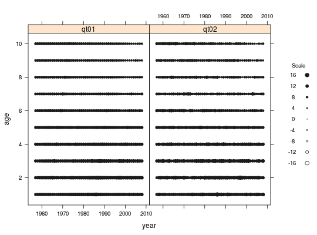
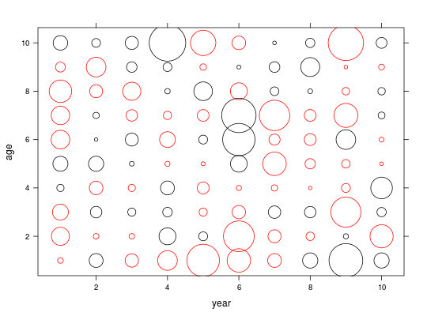

Bubbles plot
Description
This method plots three dimensional data like matrices by age and year or age-class, very common in fisheries. The bubbles are proportional to the values on the matrix. Note that bubbles accept an argument bub.scale to control the relative size of the bubbles. Positive and negative values have separate colours.
Method Bubbles plot
Usage
# S4 method for formula,FLQuant bubbles(x, data, bub.scale = 2.5, col = c("blue", "red"), ...) # S4 method for formula,data.frame bubbles(x, data, bub.scale = 2.5, col = c("blue", "red"), ...) # S4 method for formula,FLCohort bubbles(x, data, bub.scale = 2.5, ...) # S4 method for formula,FLQuants bubbles(x, data, bub.scale = 2.5, bub.col = gray(c(0.1, 0.1)), ...)
Description
This method plots three dimensional data such as matrices by age and year or
age-class, very common in fisheries. The area of each bubble is proportional
to the corresponding value in the matrix. Note that bubbles accepts
an argument bub.scale to control the relative size of the bubbles.
Positive and negative values have separate colours.
Generic function
<<<<<<< HEADbubbles(x, data)
Methods
- signature(x=formula, data=FLQuant) :
- Produce bubbles plot of the object.
- signature(x=formula, data=FLQuants) :
- Produce a lattice of bubbles plot of the objects. Commonly used to plot residuals of VPA assessments.
- signature(x=formula, data=FLCohort) :
- Produce bubbles plot of the object.
- signature(x=formula, data=data.frame) :
- Produce bubbles plot of the object.
Examples
Examples
<<<<<<< HEAD ======= >>>>>>> mergeRoxygen
qt01 <- log(catch.n(ple4)+1) qt02 <- qt01+rnorm(length(qt01)) flqs <- FLQuants(qt01=qt01, qt02=qt02) bubbles(age~year|qname, data=flqs, bub.scale=1)
<<<<<<< HEAD qt03 <- FLQuant(rnorm(100),dimnames=list(age=as.character(1:10),year=as.character(1:10))) bubbles(age~year, data=qt03, bub.scale=7, col=c("black","red"))